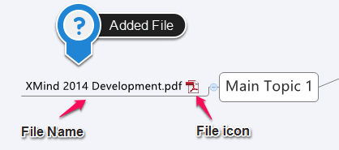

Attachment
XMind enables you to attach external files to a single topic, making the attachments appear as subtopics of the chosen topic. The titles of these subtopics are the same as the file name of the attached files.
There are two different methods to add the attachments to a topic:
Method 1:
- Select the topic.
- Open the Attachment dialog by:
- Choosing "Insert > Attachment" in the menu.
- Clicking 'attachment' icon on the toolbar.
- Navigate to the file(s), and click 'OK'.
- The selected file(s) will be added as the subtopic(s) of the target topic.
Method 2:
- Select the file(s) you want to add into XMind from your directory.
- Drag the file(s) into the map.
- Drop file(s) to the target topic to become its subtopic.
- Drop file(s) to the blank place on the map, where it will become a floating topic(s).

Note: All attachments are presented as subtopics/topics, so you can move, modify, and delete them, just like regular topics.